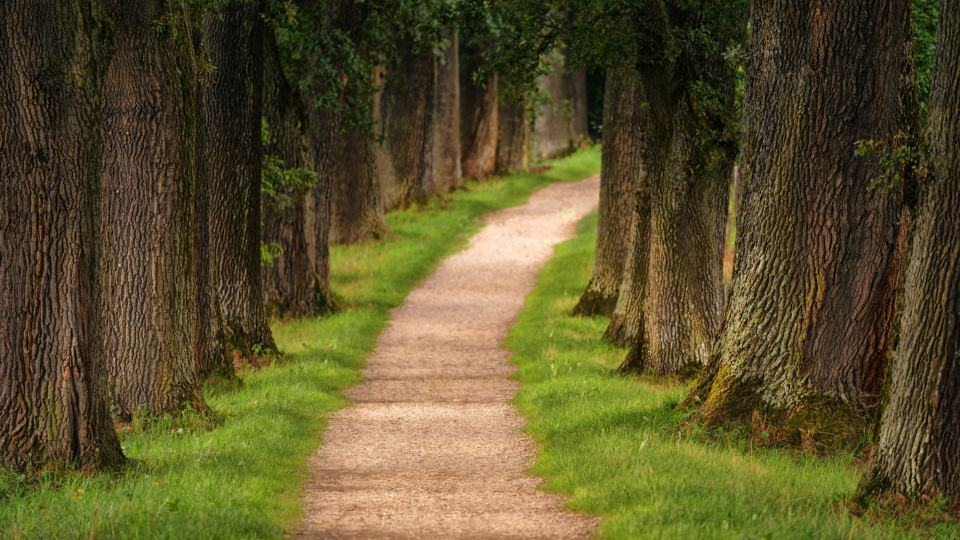

En stad ska ha fler träd om tio år, inte färre
Malmö, Lund och Trelleborg har mål för krontäckning som kräver att varje fällt träd ersätts. Vi planterar i skelettjord där det går, använder bevattningssäckar de första tre somrarna och kör elektriska lastbilar i innerstaden.
Miljö & förnyelse
En stad ska ha fler träd om tio år, inte färre
Malmö, Lund och Trelleborg har mål för krontäckning som kräver att varje fällt träd ersätts. Vi planterar i skelettjord där det går, använder bevattningssäckar de första tre somrarna och kör elektriska lastbilar i innerstaden.
- 1:1ersättningsträd för varje fällt träd
- 3 årgaranterad etableringsvattning
- 60 %av körningarna i Malmö med el

Trygghet
Krav som upphandlingar ställer
- European Tree WorkerAlla lagledare och sex arborister är ETW-certifierade.
- ISO 14001Certifierat miljöledningssystem som krävs i de flesta kommunala upphandlingar.
- Arbete på väg nivå 2Alla som arbetar med gatuträd har utbildning för arbete på väg.
- Ansvarsförsäkring 20 MkrTäcker skador på tredje man, fordon och kommunal egendom.

Teamet
Arbeta med data och motorsåg
Vi söker både arborister och inventerare. Våra anställda går ETW-utbildningen på betald arbetstid och får två dagar per år till fortbildning på Alnarp.
Fältlag och inventerare sitter vid samma bord på måndagsmötet så att planerna stämmer med verkligheten.